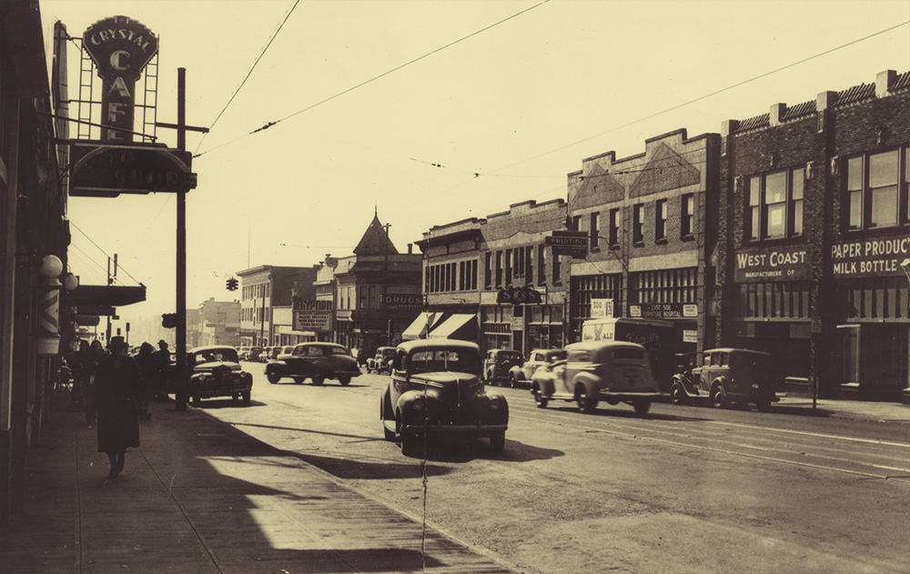
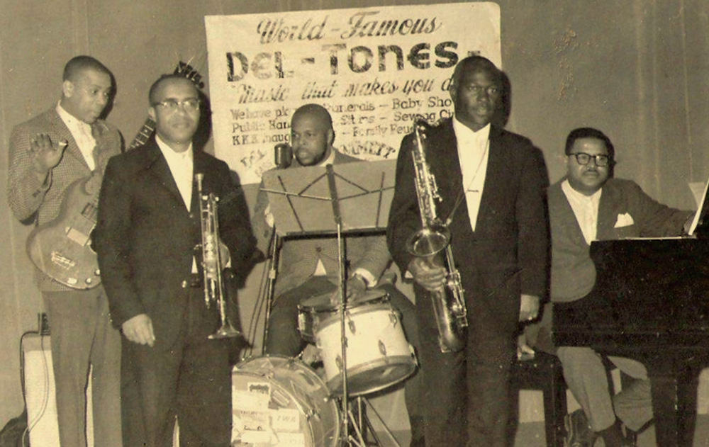
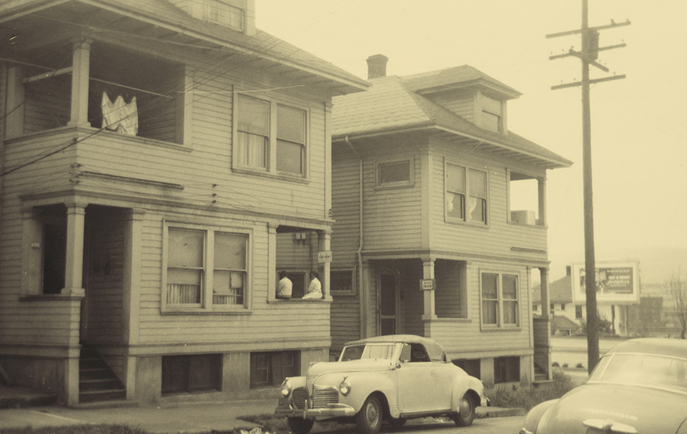
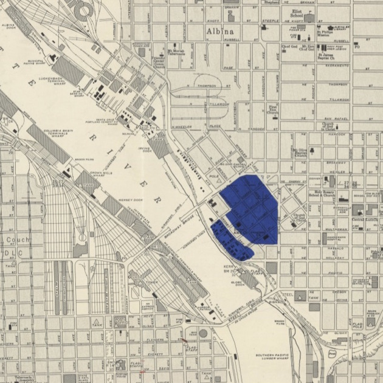
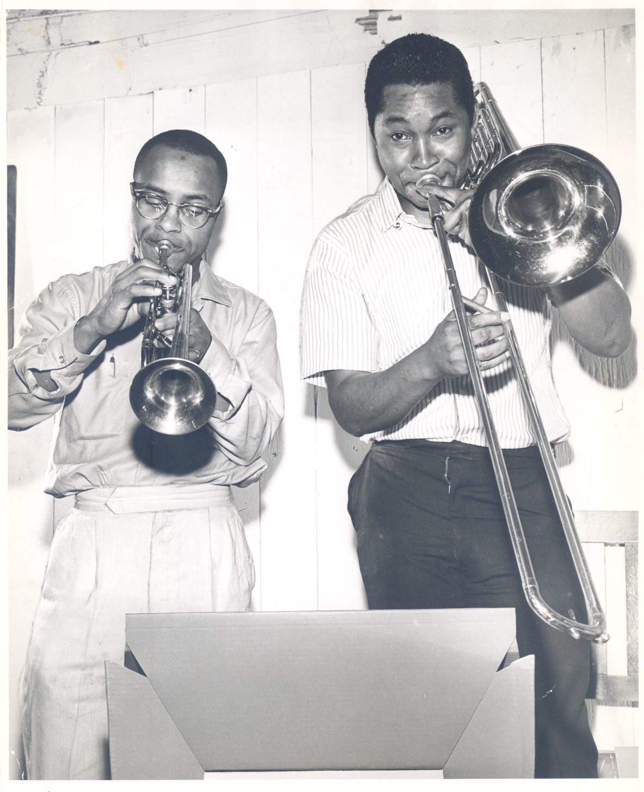

Not so long ago, a small segregated neighborhood in Portland was home to one of the more fascinating and vibrant jazz scenes on the West Coast.
The list of names that passed through read like a hall of fame: Ellington, Basie, Parker, Gillespie, Monk, Coltrane. They all blew the roofs off little clubs in Albina, helping ignite a scene that transformed Portland into a jazz destination.
The shipyard boom of World War II triggered this music golden age creating new jobs and made Oregon a home for as many as 200,000 newly arrived workers. Tens of thousands of them were black.
But the city wasn’t exactly welcoming.
Although several hundred African Americans called Oregon home, they hadn’t been legally allowed to live here until 1926. During the war, redlining and other forms of institutional discrimination funneled the new African American population into two sections of the city — Vanport, the nation’s largest wartime housing project, and Albina.
Despite the adversity they faced, Albina became a melting pot of inclusion, a neighborhood with many black-owned businesses that served racially mixed clientele. In this unique neighborhood, progress rested its hat and waited for the world to catch up.
The neighborhood didn't last, though.
Local officials and urban planners declared the community as one of “blight.” They were looking to acquire real estate for new development and saw Albina as a place where they would face little resistance. Over the next few decades, much of the mostly black population was displaced, leaving an important Oregon tale buried where the Moda Center and Legacy Emanuel Medical Center stand today.
Oregon Experience’s new documentary Jazz Town explores that brief boom in Portland jazz. And in the oral history that follows, residents, musicians and authors talk about the music, the politics, the old neighborhood and its importance. This has been edited for clarity.

In 1945, the Dude Ranch opened near the main drag of the Albina district, North Williams Avenue, or what locals called “The Stem.”
One of the city’s first large-scale, black-owned nightclubs, the Dude Ranch featured murals of black cowboys, a white manager and waitresses of both races dressed in Western garb. The venue opened at just the right time.
Bob Dietsche
Author of Jumptown: The Golden Years of Portland Jazz
It was a meteor in the history of Portland jazz. Only lasted a while but they had the very, very best of entertainment… When people would come to Portland, especially black movie stars like Lena Horne, they’d always go to the Dude Ranch.
Malcolm Slaughter
Grew up in Albina
The Dude Ranch pulled so many people that the business owners downtown got upset.
Bob Dietsche
Blacks and whites were congregating together for the sole reason of listening to jazz. It wasn’t very popular in City Hall because there was too much mixing… They finally closed it down after there was a report of somebody firing off a gun.
That’s one theory, however it’s unclear exactly why the Dude Ranch closed. It only lasted a year or so, but the club set a standard for Portland. The city’s jazz scene was real — and serious.
Malcolm Slaughter
My mother and father went to see Thelonious Monk [at McClendon’s, another club]…After the show my dad talked to him. And so Thelonious continued to play till 5 a.m. just for my mom and dad. My father brought him home, and he spent the night and next day at our house…
My dad took him to the train station. About an hour later, there was a knock at the door. It’s Monk and he says, ‘I missed the train.’ It was obvious he just wanted to stay there with my dad … [Eventually], my father called the airlines and told them Monk was an atomic scientist and needed to be at a meeting in Seattle.
He took him to the airport and Monk had a suitcase with a belt wrapped around it and a cardboard box and then he had three hats stacked on top of his head...my dad said everybody in the airport stopped and watched him walk across the lobby, this black man with the three hats and a cardboard box and and a suitcase.
Today, Thelonious Monk is a jazz legend. Back then he was talented pianist who was experimenting with the obscure, intellectual jazz called “bebop.” One of the most popular styles of jazz in Portland was completely different. It was called “jump blues.”
Mel Brown
Jazz drummer who grew up in Albina
That’s what it was, because the town was just jumping because there’s music everywhere and everybody had fun.
Bob Dietsche
It was jazz for dancing.
Lynn Darroch
Author, “Rhythm in the Rain: Jazz in the Pacific Northwest”
It was developed as a way to get a kind of a big band sound with only six to eight people.
And the shows were popping.
Lynn Darroch
Big Jay McNealy was a saxophonist who came through Portland frequently. One of his signature acts was to lay on his back honking a big b-flat on his tenor saxophone, kicking his legs in the air while one of his band mates held the microphone over him. Teenage fans really loved that.
Bob Dietsche
Buddy Banks [a jazz saxophonist] was big in Portland… They invented dance steps to go with his music… It wasn’t just instrumentals influencing dancers. Dancers would actually influence instrumentalists, too.
Some of the country’s best-known black artists performed at Portland’s largest venues, places such as the Jantzen Beach Ballroom and The Civic Auditorium. But they weren’t welcome at the city’s largest hotels.
Gerry Caldwell
Grew up in Albina; his home became a boarding house for artists, including Louis Armstrong
They couldn't stay downtown. [The promoters] would come into the neighborhood and find a family who could put 'em up for a night or two.
“Sweet Baby” James Benton
Jazz singer, jam session host
There was about four or five houses around Portland those guys would stay… What we’d do was drive around the block and hope that we'd see some of these cats…Armstrong was the only one that would come out and hang with you for a bit. He was a sweet cat. He was sweet to the bone.

Music was always playing in the neighborhood. It floated through shared walls, out open windows and from venues on The Stem. Musicians also played at some less-traditional places, including in a built-out garage in Sweet Baby James Benton’s backyard, which featured a full 20-by-20-foot stage and seats from the old Egyptian Theater.
Musicians jammed there at all hours of the day. But it was much more than just a practice space.
Lynn Darroch
They’d have a big barbecue. James had even built a little putt and pitch golf course in his backyard, and guys would play for a penny a hole and the wives would hang out… They’d go get ready for their gigs at 7 or 8 p.m. and then they’d come back afterwards at 1 a.m. and jam until 3 or 4 a.m. Then the next day, they’d assemble at noon and do it all over again.
Lynn Darroch
If you lived next door well then it would be hard to ignore that Sammy Davis Jr. was in the backyard.
Mel Brown
That was a hip spot… It’s all the players around town that can really play.
“Sweet Baby” James Benton
The older guys would get there about 11 or 12 p.m., all decked out. Man, they’d be clean… They go in there and sit down on one of the stools ...the conversation would go on and on all day.
Mel Brown
We called it ‘cutthroat sessions.’ When you’d go to the jam sessions after the regular job, but that was to stretch out and play the music you really wanted to play.
It was an environment where both younger and older jazz musicians honed their craft and shared what they learned.
Mel Brown
These other guys from different bands would say, ‘Oh, this is a new tune. Let me show you the chord changes to that.’ So you’d learn a new tune. It’s like, ‘Oh, man, this is really hip. I can hardly wait to play with other guys who know exactly what I’m doing.’
Lynn Darroch
I believe that James Benton’s backyard was one of those situations that advanced the music, because it gave [musicians] an opportunity to come together.

After the war, the population of Vanport dropped to about 18,000 residents. The city disappeared in a day, May 30, 1948. The Columbia River breached a dike and washed the community away.
Nearly 6,000 black residents were left homeless. That’s double the entire black population of Portland before the war. Families lucky enough to find housing inside Albina crowded the neighborhood.
Although forced to live in one section of the city, the children who grew up there remember a dynamic, strong community.
Gerry Caldwell
It takes a village to raise a person. Well, the village raised a whole bunch of us… Neighbor relations were such that when we were out playing, if you had to go to the bathroom, you just found a house with their door open.
Shirley Nanette
Jazz vocalist, grew up in Albina
We had Irish people. We had Japanese people. We had Indians. We had Mexicans, and we had black people. We all lived together .... Growing up in the neighborhood was a wonderful experience, because people bonded together.
Gerry Caldwell
When I was a young man, I was delivering papers. Over on the corner fellows were doing a drug deal. I kinda watched it, and I got ready to turn around and leave, and the gentleman called me back... He said, ‘Did you see us? Don’t ever do that,’ and he commenced to put his hand on my behind for a few swats to make sure I understood.
Shirley Nanette
They looked out for each other.
The post-flood population boom only added to the jazz scene.
Mel Brown
Jazz drummer who grew up in Albina
They used to have floor shows at some of these clubs around, and sometimes the floor show started at 6 a.m. Being a newspaper boy... you’re riding your bike by the club, and the door opens up, and all of a sudden you can hear the music coming from inside, and you could peek and see what the organ player and the drummer were doing before they closed the door.
Bob Dietsche
Where the Trail Blazers are playing now, you could stand there and see on Broadway just hundreds of people at 4 a.m. all dressed up as if they’re going to a fashion show.
“Sweet Baby” James Benton
Go down to Northwest 23rd in the summertime, that's what Williams was like then. It would have taken you 20 minutes to get down where you were going ‘cause everyone was doing two miles an hour.
Malcolm Slaughter
I remember as a kid you could walk down the sidewalk, and you could look in the clubs, and you could see dice tables, and you could see people playing poker… There was also houses of prostitution, a red light district. I remember trying to peek in the windows.
Shirley Nanette
There was just so much music everywhere.
During the day, the music was heard coming out of people’s homes.
Mel Brown
You’d say, ‘Oh, that’s Dale Smith. That’s the drummer that’s practicing on the drums down the street’ or ‘That’s George Lawson. He’s playing his alto saxophone’ or ‘That’s Sherman Thomas, and he’s playing his tenor saxophone.’
Gerry Caldwell
I feel sorry for people that came here afterward and missed Portland at its finest.

Across the nation, urban renewal projects transformed cities and displaced poorer residents in the 1960s and 1970s. Portland city planners saw the lower Albina district as one in need of revitalization.
In 1956, voters approved the construction of the Veterans Memorial Coliseum, clearing 476 homes in its path and bulldozing the site of the original jazz club scene. Then came Interstate 5 and Highway 99. By the time the dust settled from the expansion of Emanuel Hospital in 1973, over 200 additional homes and businesses were gone.
“[The project] destroyed the heart of the Black community in Lower Albina,” wrote professor Karen J. Gibson in her article Bleeding Albina: A History of Community Disinvestment, 1940-2000.
Over the next 40 years, the lower Albina community saw a drastic demographic shift as black residents were displaced by urban renewal and, later, by rising rents.
Shirley Nanette
It got taken away. It got snatched away...That’s the bottom line.
Gerry Caldwell
It was strange; at that day and time, the black folk couldn't get money to work on their places on the avenue. But after they moved out, here come the young white folks with their money, and they could get extra money to build.
Shirley Nanette
It’s heart breaking for me to look down Williams Avenue… To me, that’s blight. They have structures that take out the natural light of the area. It’s almost like a dark place, especially for people who are from Portland and have seen such a drastic change.
The turbulent 1960s, with national assassinations and unrest at home were no help to the few jazz clubs that remained.
By the early 70s, there was still jazz in Portland, but there was certainly not much of a jazz scene.
By then Mel Brown was already on the road.
The kid who once delivered newspapers around Albina grew up to become a Motown session drummer. He played with Stevie Wonder, Diana Ross and Marvin Gaye, among others. Then he came home and started a new weekly jam session in a room he rented at the Elk’s Lodge.
Mel Brown
Paid my own money I had made with the Supremes and had a jam session on Sunday for kids between 17 and 21. That age bracket, you’re too old for high school and you’re too young to get in the clubs. Where do you go to have a mentor teach you what this stuff is really all about?
Brown was key figure in reigniting Portland’s jazz scene upon his return in the 1970s. Depending on the day, you can still see him play in today’s jazz clubs. And he’s still teaching.
The importance of passing his love and knowledge of jazz along was a lesson he learned growing up in the old Albina neighborhood.
Mel Brown
Guys like James Benton they were saying, ‘Little kid, we will show you what this is about. But once you get it together you have to pass it on to somebody else.’ And that’s what I try to do.

.